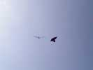
Illiers-L'évêque, tout le monde connaît ! Mais si, 1000 habitants, dans l'Eure, au nord de Dreux ! Saturé des grands festivals, nous sommes venus ici à... 3 cervolistes pour fêter le 14 Juillet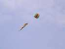
Il y avait moi, François qui lançait les invitations, et a bien volé, d'abord avec son petit gonflable et sa turbine...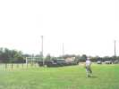
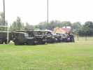
A part le cerf-volant, la grande attraction de la journée était l'auto ancienne, civile ou militaire...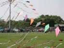
Nous avons cohabité sans problèmes sur la surface (4 terrains de foot...). C'a été une grande jouissance de pouvoir voler sans le stress de la cohabitation avec des cerfs-volistes néophytes ou sans-gêne...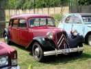
Les voitures sont arrivées petit à petit en fin de matinée, comme cette magnifique Traction Familiale, avec strapontins intégrés au plancher à l'arrière, on n'a rien inventé !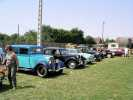
Les anciennes se sont sagement garées autour du terrain principal, en attendant la parade devant le jury... et d'abord le déjeuner !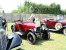
Une vraie ancienne, une Trèfle de chez Citroën, en super état, la peinture reluisant au soleil...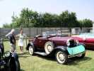
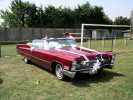
Plus récente, cette splendide Cadillac décorée façon mariage...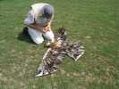
Côté cerfs-volants, François a aussi apporté son oiseau à plumes cadeau de jubilé, mais il n'a pas beaucoup volé, trop de vent...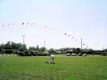
François avait aussi monté son arche, ça fait volume, surtout avec ces longues queues, et ça vole quand il y a du vent sans qu'on s'en occupe...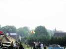
Il est même venu un cerf-voliste inconnu, avec un CV armé seulement d'un jonc souple qui fait le tour. Supporte mal le vent fort, évidemment !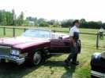
Les automobilistes se préparent pour passer devant le jury. Le propriétaire d'une des 2 Cadillac a bondi de sa traction et s'est changé en texan pour un 2ème passage !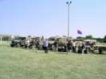
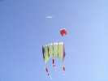
Pour le cerf-volant, on n'est pas nombreux mais on met de la toile en l'air ! Albatros2, flow-form de Christophe (modèle modifié Bécot), grand flow-form de l'Antenne de Beauce...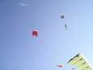
On a même 5 CVs en l'air par moments, avec le petit flow-form à manche à air, un oiseau de Bali de François, sans compter l'arche...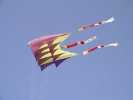
Le grand flow-form a fait du spectacle, on ne voulait pas voler trop haut, mais l'air était turbulent en bas. Enfin, après quelques réglages, il a tenu l'air indéfiniment, il a fallu seulement le descendre par sécurité pour dîner... mais on l'a remonté après !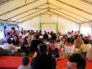
Au soir, le dîner nous était offert dans le barnum. Plateau-repas, mais copieux, et dessert en plus après...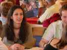
Les belles Illieraises (ou Illiers-l'Evêquaises ?) étaient présentes, en prévision du bal du 14 juillet...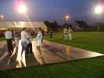
Le plancher avait été monté pour accueillir les danseurs, qui s'en sont déjà donné à coeur-joie en attendant le spectacle pyro, et ont bien continué après !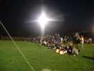
Mais 10 h 30 arrivent, on s'aligne pour le feu d'artifice, il y a même des lampions...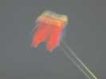
Les cerfs-volants, eux, ont le droit de rester en l'air. Evidemment, les projecteurs du stade éclairent vers le bas, mais on devine nos toiles, là-haut...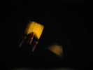
Moi, j'ai un projecteur à batterie (durée utile 5 mn et 30 s...), mais François en a un qu'il branche sur sa voiture... N'insiste pas trop, François, il va encore falloir te pousser pour démarrer !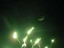
Ca y est, le feu d'artifices est parti ! Nous, on vole au-dessus, c'est formidable, d'être DANS un tel show !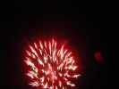
Ca a été un beau feu d'artifice pour une petite commune, varié et complet...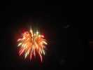